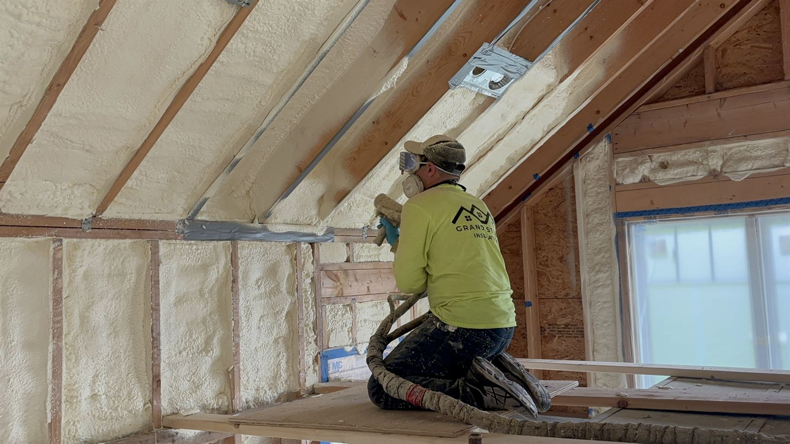
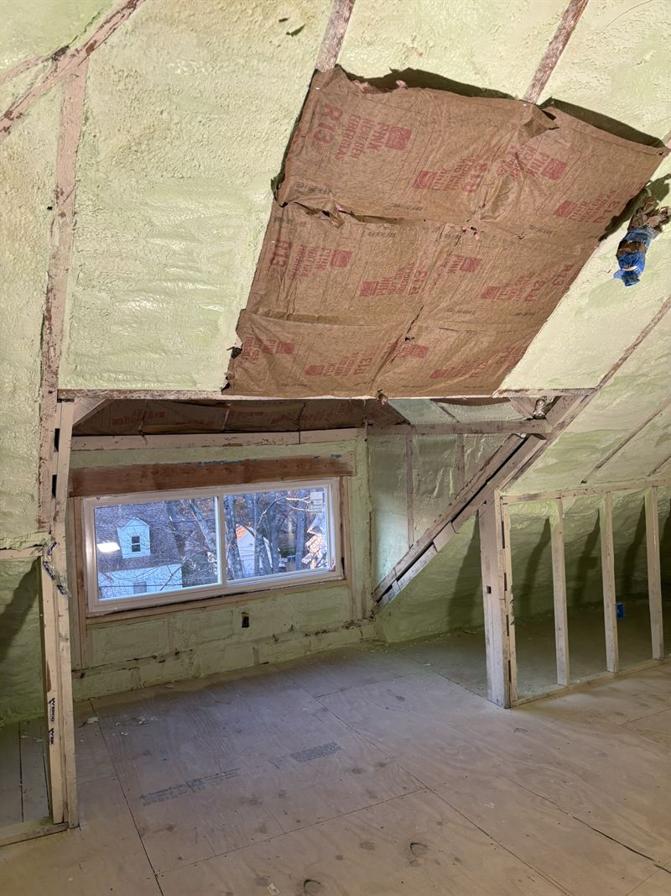
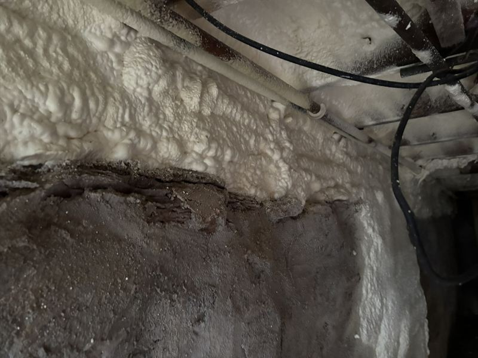
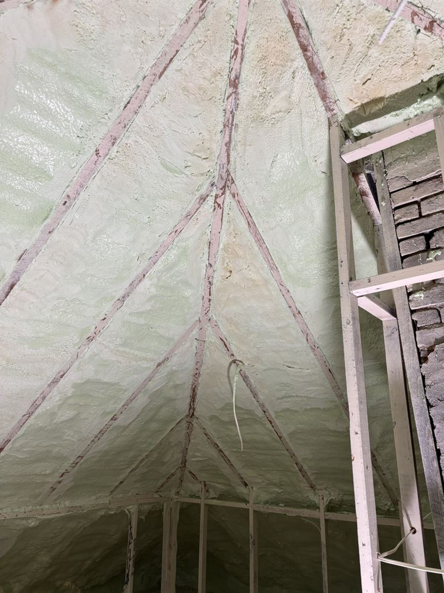
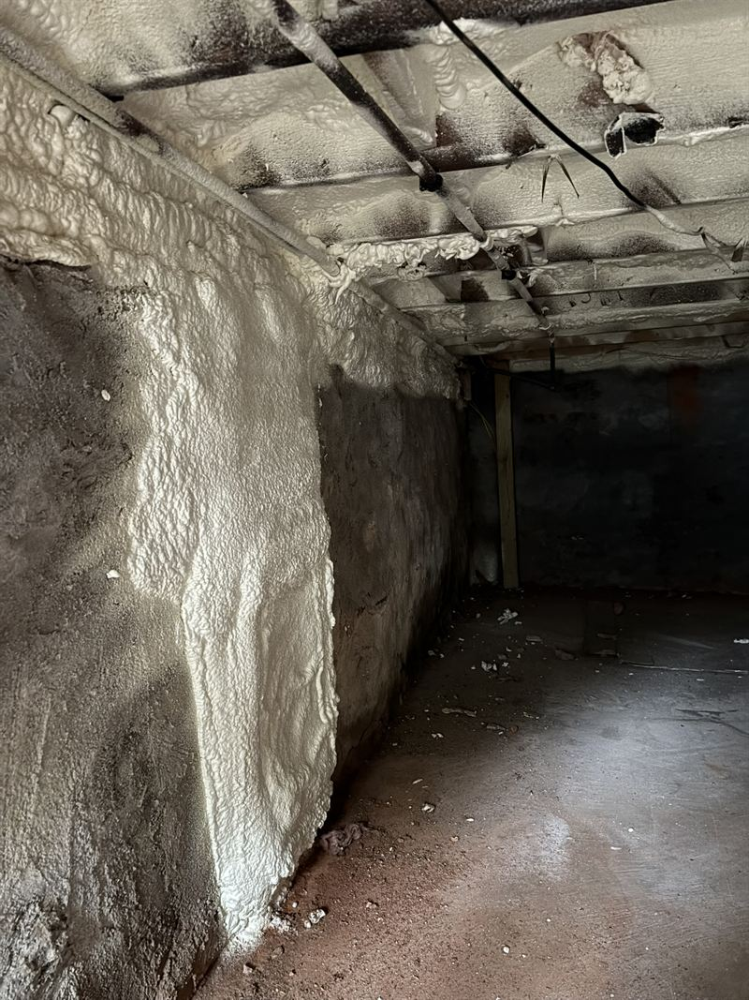
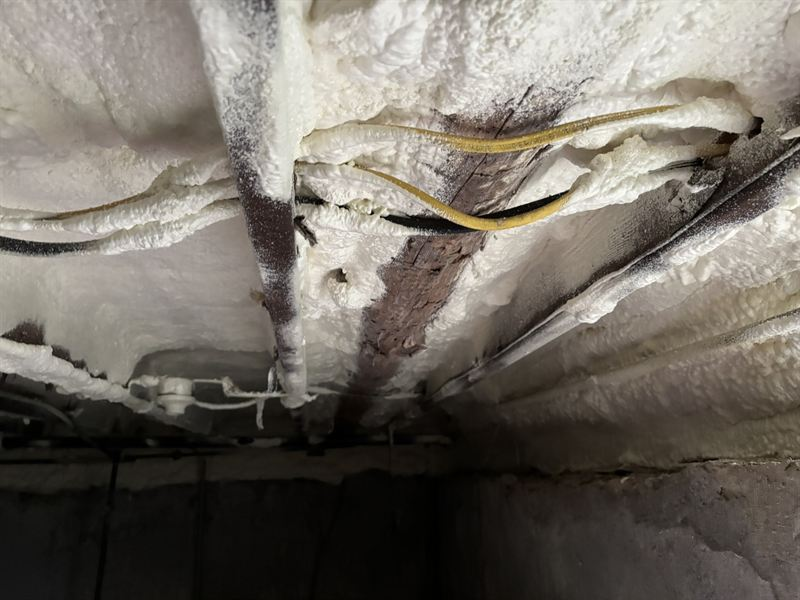
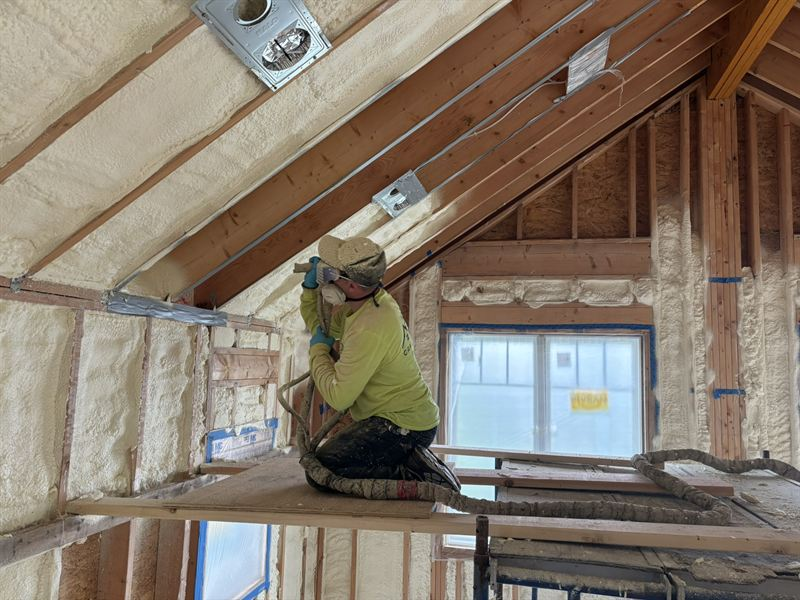
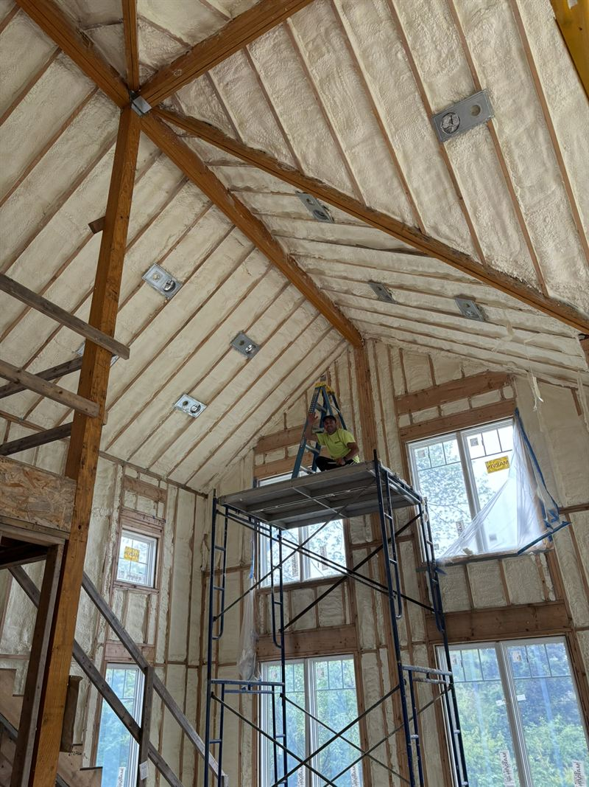
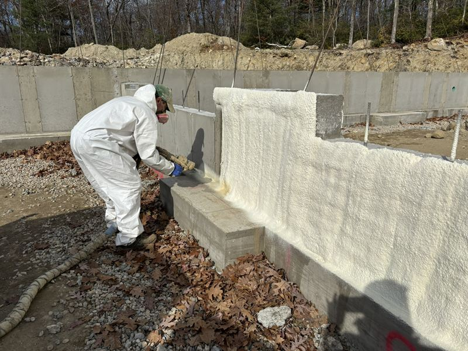

Attic & basement solutions
Cap the top. Then close the bottom.
When you look at the energy efficiency of a home, it is usually best to begin with the attic or ceiling — then work down to the rim joists where the next-biggest leaks are hiding.

Attics & cathedral ceilings
Think of the house as a chimney
Picture your home as a cylinder with warm air leaving out of the top. That upward pull — the stack effect — drags conditioned air out through every gap in the ceiling plane and sucks unconditioned air in low to replace it. Adding more batts on the attic floor does not stop it, because air moves straight around and through them.
Sealing the roof deck or ceiling plane with foam caps the top of the cylinder. The attic becomes part of the conditioned envelope, ductwork up there stops fighting a 140° space, and the air movement that drove your bill quietly stops.
- Roof deck & rafter baysFoam bonded to the sheathing, sealed at every rafter and top plate.
- Cathedral & vaulted ceilingsTight bays where batts routinely leave gaps and compression.
- Knee walls & gable endsThe vertical surfaces most attic jobs forget entirely.
- Attic hatches & penetrationsCan lights, vent stacks, wire chases and duct boots.

Basements & crawlspaces
Start with the perimeter, not the whole room
Basements are usually the next major area to address once the top of the house is handled. The most affordable first step is to insulate the rim joists along the perimeter, targeting the major leaks rather than paying to cover every square foot of wall.
The rim joist is where the floor framing meets the foundation — a long, thin, notoriously leaky band that runs the whole way around the house. Closed-cell foam there delivers superior air sealing, moisture resistance and thermal insulation in one pass, and it does it for a fraction of what a full basement job costs.
- Rim joists & sill platesSealed, insulated and moisture-resistant in a single application.
- Basement ceilingsFor keeping an unconditioned basement from chilling the floor above.
- Foundation & stem wallsInterior or exterior, including pre-backfill on new construction.
- CrawlspacesEncapsulation-style treatment where the assembly calls for it.
Is this your house?
The symptoms we get called about
If two or more of these sound familiar, air movement is almost certainly the cause — not a lack of R-value.
The upstairs never matches the thermostat
Classic stack effect. The second floor gains heat from an unsealed attic faster than the system can remove it.
Cold floors over the basement
Usually the rim joist band, not the slab. Cheap to fix and noticeable within a day.
Dust, pollen and outdoor smells indoors
Air that gets in carries everything with it. Sealing the envelope cleans up what the filter never sees.
The HVAC runs constantly
The equipment is not undersized so much as it is fighting a leaky box that never stops losing conditioned air.
Condensation or musty smell below grade
Warm humid air meeting a cold surface. Closed-cell foam moves the dew point out of the assembly.
Bills that climb every year
Batts settle and compress. A sealed, adhered envelope does not.
Attic & basement work
What finished looks like






Not sure where to start?
That is exactly what the free consultation is for. We walk the attic and the basement, tell you which one is costing you more, and quote only the work that earns its place.